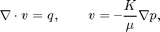

Basic Flow-Solver Tutorial
The purpose of this example is to give an overview of how to set up and use the single-phase mimetic pressure solver to solve the single-phase pressure equation

for a flow driven by Dirichlet and Neumann boundary conditions. Our geological model will be simple a Cartesian grid with anisotropic, homogeneous permeability.
In this tutorial example, you will learn about:
- the grid structure,
- how to specify rock and fluid data,
- the structure of the data-objects used to hold solution,
- how to assemble and solve linear systems,
- the structure of the mimetic linear systems,
- useful routines for visualizing and interacting with the grids and simulation results.
Contents
Define geometry
Construct a Cartesian grid of size 10-by-10-by-4 cells, where each cell has dimension 1-by-1-by-1. Because our flow solvers are applicable for general unstructured grids, the Cartesian grid is here represented using an unstructured format, in which cells, faces, nodes, etc. are given explicitly.
nx = 10; ny = 10; nz = 4; G = cartGrid([nx, ny, nz]); display(G);
G =
cells: [1x1 struct]
faces: [1x1 struct]
nodes: [1x1 struct]
cartDims: [10 10 4]
type: {'tensorGrid' 'cartGrid'}
griddim: 3
After the grid structure is generated, we plot the geometry.
plotGrid(G); view(3), camproj orthographic, axis tight, camlight headlight

Process geometry
Having set up the basic structure, we continue to compute centroids and volumes of the cells and centroids, normals, and areas for the faces. For a Cartesian grid, this information can trivially be computed, but is given explicitly so that the flow solver is compatible with fully unstructured grids.
G = computeGeometry(G);
Set rock and fluid data
The only parameters in the single-phase pressure equation are the permeability  and the fluid viscosity . We set the permeability to be homogeneous and anisotropic
and the fluid viscosity . We set the permeability to be homogeneous and anisotropic
The viscosity is specified by saying that the reservoir is filled with a single fluid, for which de default viscosity value equals unity. Our flow solver is written for a general incompressible flow and requires the evaluation of a total mobility, which is provided by the fluid object.
rock.perm = repmat([1000, 100, 10].* milli*darcy(), [G.cells.num, 1]); fluid = initSingleFluid('mu' , 1*centi*poise , ... 'rho', 1014*kilogram/meter^3);
Initialize reservoir simulator
To simplify communication among different flow and transport solvers, all unknowns are collected in a structure. Here this structure is initialized with uniform initial reservoir pressure equal 0 and (single-phase) saturation equal 0.0 (using the default behavior of initResSol)
resSol = initResSol(G, 0.0); display(resSol);
resSol =
pressure: [400x1 double]
flux: [1380x1 double]
s: [400x1 double]
Impose Dirichlet boundary conditions
Our flow solvers automatically assume no-flow conditions on all outer (and inner) boundaries; other type of boundary conditions need to be specified explicitly.
Here, we impose Neumann conditions (flux of 1 m^3/day) on the global left-hand side. The fluxes must be given in units of m^3/s, and thus we need to divide by the number of seconds in a day (day()). Similarly, we set Dirichlet boundary conditions p = 0 on the global right-hand side of the grid, respectively. For a single-phase flow, we need not specify the saturation at inflow boundaries. Similarly, fluid composition over outflow faces (here, right) is ignored by pside.
bc = fluxside([], G, 'LEFT', 1*meter^3/day()); bc = pside (bc, G, 'RIGHT', 0); display(bc);
bc =
face: [80x1 int32]
type: {1x80 cell}
value: [80x1 double]
sat: []
Construct linear system
Construct mimetic pressure linear system components for the system Ax = b
based on input grid and rock properties for the case with no gravity.
gravity off; S = computeMimeticIP(G, rock); % Plot the structure of the matrix (here we use BI, the inverse of B, % rather than B because the two have exactly the same structure) clf, subplot(1,2,1) cellNo = rldecode(1:G.cells.num, diff(G.cells.facePos), 2) .'; C = sparse(1:numel(cellNo), cellNo, 1); D = sparse(1:numel(cellNo), double(G.cells.faces(:,1)), 1, ... numel(cellNo), G.faces.num); spy([S.BI , C , D ; ... C', zeros(size(C,2), size(C,2) + size(D,2)); ... D', zeros(size(D,2), size(C,2) + size(D,2))]); title('Hybrid pressure system matrix')
The block structure can clearly be seen in the sparse matrix A, which is never formed in full. Indeed, rather than storing B, we store its inverse B^-1. Similarly, the C and D blocks are not represented in the S structure; they can easily be formed explicitly whenever needed, or their action can easily be computed.
display(S);
S =
BI: [2400x2400 double]
ip: 'ip_simple'
type: 'hybrid'
Solve the linear system
Solve linear system construced from S and bc to obtain solution for flow and pressure in the reservoir. Function solveIncompFlow demands that we pass a well solution structure even if the reservoir has no wells, so we initialize an empty wellSol structure. The option 'MatrixOutput=true' adds the system matrix A to resSol to enable inspection of the matrix.
resSol = solveIncompFlow(resSol, G, S, fluid, ... 'bc', bc, 'MatrixOutput', true); display(resSol);
resSol =
pressure: [400x1 double]
flux: [1380x1 double]
s: [400x1 double]
facePressure: [1380x1 double]
A: [1340x1340 double]
Inspect results
The resSol object contains the Schur complement matrix used to solve the hybrid system.
subplot(1,2,2), spy(resSol.A);
title('Schur complement system matrix');
We then plot convert the computed pressure to unit 'bar' before plotting result.
clf plotCellData(G, convertTo(resSol.pressure(1:G.cells.num), barsa()), ... 'EdgeColor', 'k'); title('Cell Pressure [bar]') xlabel('x'), ylabel('y'), zlabel('Depth'); view(3); shading faceted; camproj perspective; axis tight; colorbar